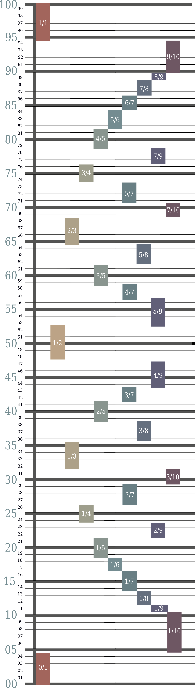

Antidotes to Number Numbness
Humans can’t grasp large numbers. True, when we hear “one hundred”, we might imagine ten rows of ten or a few written paragraphs. Some of the more number-savvy might hear one thousand and see half the stars in the sky. But when we reach for higher powers of ten—ten thousand, one hundred thousand, and the formidable -illions—we come up short. These numbers are beyond the reach of our intuition. Our innumeracy leads us to undervalue big issues because we can’t visualize just how big they are (scope insensitivity), making utilitarian calculations difficult.
However, humans make up for a lack of inborn numeracy with a talent for creating and manipulating mental images. This opens a shortcut where we use our natural visual capabilities to improve intuition with numbers.
Large Numbers
One remedy for number numbness is chunking. Chunking happens when we mentally represent a quantity by comparing it to a reference that’s easy to visualize, as in, "one megaton of TNT could destroy Paris, so twenty well-placed megatons will destroy a country." Writers litter comparisons like this in news and popular science articles because they help readers grasp the wide-ranging quantities of science and mathematics.
These comparisons are helpful when writers supply them, but they're no solution we can broadly apply. A single repository of these comparisons that we can memorize would help in more situations.
This is an attempt at such a repository.
Instead of trawling the internet for poorly sourced examples, we can multiply tiny units of volume by powers of ten and visualize the resulting volume. I tried two different units for this: raindrops and grains of sand. These units are useful because they never change, unlike population, and because we can easily visualize sand grains and raindrops, unlike seconds, meters, dollars, years, or breaths.
For each power of ten between one hundred and one trillion, the chart below gives the volume filled by that many grains of sand and that many raindrops. I’ve included links to images when possible to help visualization. For smaller numbers, I’ve also thrown in a few miscellaneous examples, though these become hard to find as the numbers grow.
| Power of Ten | Short Scale Name | Volume Filled by That Many Grains of Sand | Volume Filled by That Many Raindrops | Miscellaneous |
|---|---|---|---|---|
| 10^2 | One Hundred | A tiny wisp | Two-thirds of a US teaspoon (3.2 mL) |
|
| 10^3 | One Thousand | A tiny pile | A pefume bottle |
|
| 10^4 | Ten Thousand | A small pile | [CLassic coca-cola bottle](https://citymarteg.com/image/cache/catalog/cat/Drinks/soda/coca-cola-bottle-330-ml-550x550.jpg) | * Diameter of the circle of the horizon at sea level in meters * Age of the city of Jericho, the oldest city known |
| 10^5 | One Hundred Thousand | One-twentieth of a marshmallow | [Large water bottle](https://pasteboard.co/Kikjy4v.png) | * Entries in all 2,340 pages of the Collins English Dictionary * Breaths a human takes in four days |
| 10^6 | One Million | Half a marshmallow | [Motorcycle Case](https://twistedthrottle.com/wp-content/uploads/2020/05/phprc0DKc.jpg) | Characters in a 335-page book |
| 10^7 | Ten Million | A [cola mini](https://www.coolstuffjapan.com/image/cache/products/drinks/soft/dr0071-800x800.jpg) | [Tall refrigerator](https://qph.fs.quoracdn.net/main-qimg-a4cc0df7d6eff03dd6d9e8620c13e55b) | |
| 10^8 | One Hundred Million | [Tea Kettle](https://ak1.ostkcdn.com/images/products/13549950/L20228381.jpg?imwidth=400&impolicy=medium) | Small Jacuzzi | |
| 10^9 | One Billion | Eight cola bottles | [Water tank](https://i.machinio.com/medium/1tgk703/6456098.jpg) | Highest number countable in a lifetime |
| 10^10 | Ten Billion | One fifth of a hot tub | One-tenth of an Olympic swimming pool | |
| 10^11 | One Hundred Billion | Two hot tubs | Enough to fill the interior of one floor of [432 Park Avenue](https://upload.wikimedia.org/wikipedia/commons/thumb/1/1b/432_Park_Avenue%2C_NY_%28cropped%29.jpg/800px-432_Park_Avenue%2C_NY_%28cropped%29.jpg) | |
| 10^12 | One Trillion | [Petroleum Tanker](https://5.imimg.com/data5/CA/FP/MY-18877576/gggg-500x500.jpg) | Nine floors of 432 Park Avenue |
I’m open to suggestions for new entries.
Fractions
If we can get big, why not also get precise? The difference between 36% and 40% is important, but hard to visualize. Representing probabilities as ratios helps: 40% is two in five, while 36% is nine in twenty-five.
But how much is nine in twenty-five? Is that more or less than seven sixteenths? Fractions with high denominators are barely more legible than decimals. If we don’t require exact precision, we can round the ratio to a fraction with a lower denominator. Ten seems a reasonable number.
For all percentage values to two significant figures, this chart gives an estimate as a fraction with a denominator no greater than ten. Print it out and stick it on your wall. The next time you see 36% in the wild, glance at the chart and say, “oh, that’s about three eights,” and thus be enlightened. With time and practice, you’ll be able to do this without the chart.
The small-denominator restriction does introduce limitations. Simple fractions aren’t great for values less than 8% or greater than 92%, but they are good enough for values in between.
If denominators up to ten are too imprecise (or too precise) for you, here's a program to generate the nearest fraction of any given maximum denominator to any given decimal.
Methods
Sand Scale
I model a grain of sand as a sphere with a radius of 0.18 millimeters, which is typical. This makes the volume of a single grain 0.0244 cubic millimeters. However, it’s not as simple as multiplying that number by the number of grains, because spheres don’t pack perfectly. In real life, sand has porosity: I use around 30% porosity (34%), but it can range from 25.6% to 43.4%.
Droplet Scale
A raindrop is modeled as a sphere with radius 1.989 mm for a volume of 33 cubic millimeters. Note that a raindrop is about two orders of magnitude larger than a grain of sand.
Sources can be found here.

{kind=link}
{kind=link}
](https://citymarteg.com/image/cache/catalog/cat/Drinks/soda/coca-cola-bottle-330-ml-550x550.jpg){kind=link}
](https://pasteboard.co/Kikjy4v.png){kind=link}
](https://twistedthrottle.com/wp-content/uploads/2020/05/phprc0DKc.jpg){kind=link}
](https://www.coolstuffjapan.com/image/cache/products/drinks/soft/dr0071-800x800.jpg){kind=link}
](https://ak1.ostkcdn.com/images/products/13549950/L20228381.jpg?imwidth=400&impolicy=medium){kind=link}
](https://i.machinio.com/medium/1tgk703/6456098.jpg){kind=link}
](https://upload.wikimedia.org/wikipedia/commons/thumb/1/1b/432_Park_Avenue%2C_NY_%28cropped%29.jpg/800px-432_Park_Avenue%2C_NY_%28cropped%29.jpg){kind=link}
](https://5.imimg.com/data5/CA/FP/MY-18877576/gggg-500x500.jpg){kind=link}